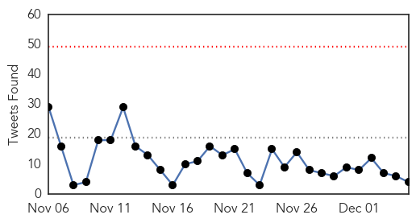
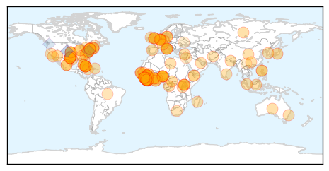

Ebola
30-Day Web Trend
0 alerts, 0 warnings

30-Day Twitter Trend
0 alerts, 0 warnings

Article Locations
Article Confidences
Top Articles:
- 1.000
- Fighting Ebola: Cuba shows the world how it is done
- 1.000
- Dangerous practices spreading Ebola
- 1.000
- Dangerous practices spread Ebola in Sierra Leone
- 1.000
- Panic At International Ports Of Entry
- 1.000
- Ebola 'czar' urges Congress to authorize emergency funding
- 1.000
- Rs 2.5m in damages if health workers die
- 1.000
- CDC profiles Ebola queries; UN worker sickened in Liberia
- 1.000
- Ebola crisis: Nigerian medics deploying to Sierra Leone
- 1.000
- Ebola: A Global Wake-Up Call
- 1.000
- Dangerous practices spread Ebola in Sierra Leone
- 0.999
- Nigerian Ebola volunteers fly into Liberia, Sierra Leone
- 0.999
- Nigerian Ebola volunteers fly into Liberia, Sierra Leone
- 0.999
- UN peacekeeper in Liberia tests positive for Ebola
- 0.999
- American arrives at Atlanta hospital for Ebola testing
- 0.999
- Nepal announces extra incentive for doctors treating ebola patients
- 0.999
- WHO Commends Spain for Ending Ebola Transmission
- 0.999
- World must do 'whatever it takes' to ensure recovery of Ebola-affected countries – Ban
- 0.999
- Health Care Volunteers From Nigeria Join The Fight Against Ebola
- 0.999
- Cooler box-equipped motorbikes donated to UN will speed up Ebola testing process in West Africa
- 0.999
- Two Sierra Leone Ebola doctors die in one day
- 0.999
- Emory Hospital Caring for Potential Ebola Patient
- 0.999
- UPDATE 2-Nigerian Ebola volunteers fly into Liberia, Sierra Leone
- 0.998
- In Light of Ebola Outbreak, Doctors Say Hospital Needs More Volu
- 0.998
- Cooler Box-Equipped Motorbikes To Speed Up Ebola Testing Process In West Africa
- 0.998
- Reuters Health News Summary
- 0.998
- Response lags behind rapid shifts in Ebola, says MSF
- 0.998
- Cooler box-equipped motorbikes donated to UN will speed up Ebola testing process in West Africa
- 0.997
- Liberians support house-to-house Ebola searches
- 0.997
- Anti-Malaria Campaign Underway in Ebola-Stricken Sierra Leone
- 0.997
- Arrival of first ebola patient to UMC Utrecht
- 0.997
- Ebola: International response to Ebola risks becoming a 'double failure'
- 0.997
- Threat of Ebola spreading in Russia low, says minister
- 0.997
- Ebola: UN crisis response mission opens new office in Mali
- 0.997
- Cuba says Ebola doctor to leave Swiss hospital
- 0.997
- Cuban doctor recovers from Ebola virus in Geneva clinic
- 0.997
- MSF Ebola Transit Unit to support the safe re-opening of Redemption Hospital for regular service - Liberia
- 0.997
- Liberia President Sets Dec. 25 Goal For No New Ebola Cases
- 0.996
- Sierra Leone threatens to jail ‘families who wash dead bodies’ in Ebola crackdown
- 0.996
- Sutton Coldfield lady who is in Sierra Leone working on the Ebola outbreak believes we will beat the deadly virus
- 0.996
- Nigerian UN Soldier Infected With Ebola In Liberia
- 0.996
- KSWO, Lawton, OK- Wichita Falls, TX: News, Weather, Sports. ABC, 24/7, Telemundo -
- 0.996
- UN peacekeeper tests positive for Ebola - Africa
- 0.996
- Cuban doctor overcomes Ebola, to return to island
- 0.996
- Cuban doctor overcomes Ebola, to return to island
- 0.995
- Sierra Leone to jail ‘entire families’ in Ebola crackdown – BorneoPost Online
- 0.995
- Sierra Leone to jail 'entire families' in Ebola crackdown
- 0.995
- Infectious Disease Experts Discuss Facts of Ebola
- 0.995
- Ebola Virus Disease: Platform for North-South Collaboration Urgently Needed
- 0.994
- Dr. Kent Brantly, Ebola survivor, speaks of ending suffering in West Africa
- 0.994
- Liberia: Fresh Ebola outbreaks reported in Monrovia
Showing top 50 articles...
Top Tweets:
- 0.900
- UN Peacekeeper in Liberia Tests Positive for Ebola http://t.co/xFnsrBM198
- 0.871
- As Ebola Surges In Sierra Leone, Communities Take Control http://t.co/Zd0dFTE0WB
- 0.868
- There were 537 new Ebola infections last wk in Sierra Leone - highest wkly tally in any country since outbreak began http://t.co/tNDhTh4g3E
- 0.829
- RT: Clinical Inquiries Regarding Ebola Virus Disease Received by CDC http://t.co/sgMyd2nEHH
- 0.812
- Sierra Leone Seeing 80-100 New Ebola Cases Daily http://t.co/wfd4OLyxHf
- 0.808
- RT: As Ebola Surges In Sierra Leone, Communities Take Control http://t.co/KSLiVv5OyW
- 0.788
- BREAKING: SIERRA LEONE SEEING 80-100 NEW EBOLA CASES DAILY. http://t.co/TKonzYjMZg
- 0.772
- RT: As Ebola Surges In Sierra Leone, Communities Take Control: http://t.co/4MgiUHluOD preparedness
- 0.765
- Ebola in Liberia: An Epidemic of Rumors http://t.co/3iv2sXTplJ
- 0.764
- From: Survey result of European hospitals' preparedness to admit Ebola virus patients http://t.co/jppzYzHSxi
- 0.684
- .@WHO warns of knock-on deaths as Ebola hits health systems http://t.co/PNBgnvBeiJ post2015 malaria globalhealth
- 0.660
- U.S. is weighing more aid to fight Ebola in Sierra Leone, reports & @ksieff http://t.co/KFcFb142Ue TackleEbola
- 0.648
- Ebola death toll tops 6,000 says http://t.co/5AhXvI8cMK
- 0.644
- RT: Sierra Leone, the country now hardest-hit by Ebola, said that between 80 & 100 new cases are reported every day http:/…
- 0.625
- Read this blog by a British Ebola doctor in Moyamba, Sierra Leone. It's honest and brilliantly written: http://t.co/233KM99eM0
- 0.621
- RT: @atejancole two doctors who died of ebola today sierraleone http://t.co/GRPEjr1b4d
- 0.620
- RT: U.S. is weighing more aid to fight Ebola in Sierra Leone, reports & @ksieff http://t.co/KFcFb142Ue TackleEbola
- 0.596
- Bentley the Ebola Dog's Monitoring Cost $27,000 http://t.co/4EWJ9TTWZ9
- 0.575
- Mokobé - Africa Stop Ebola [Médecins Sans Frontières] http://t.co/CbjZS79Wiu
- 0.553
- Italian doctor who contracted Ebola while working in Sierra Leone is in intensive care after his condition worsened http://t.co/vnN9EF89U2
- 0.529
- Ebola for grownups on special: http://t.co/11flCdd3CR
- 0.521
- US health worker with possible Ebola exposure in Africa has been admitted for testing at Emory University Hospital http://t.co/B1ydB93gFI
- 0.505
- RT: Virologist is volunteering in Sierra Leone - follow him for updates on his work in ebola diagnostics lab
Unknown
30-Day Web Trend
1 alerts, 0 warnings

30-Day Twitter Trend
1 alerts, 0 warnings

Article Locations

Article Confidences
Top Articles:
- 0.998
- Flu vaccine may not be as effective this year
- 0.995
- Flu vaccine may be less effective this winter
- 0.991
- CDC: Flu Vaccine May be Less Effective This Winter
- 0.990
- Flu cases growing in Pa., thanks to less effective shots for predominant strain
- 0.989
- WCAX.COM Local Vermont News, Weather and Sports-
- 0.985
- Health care professionals say there are simple ways to protect y - KTRE.com
- 0.976
- More flu on the way
- 0.925
- Flu vaccine might be less effective this season, CDC says
- 0.918
- New Mexico: Two additional hantavirus cases reported, one death in McKinley County
- 0.917
- Chicago Tribune
- 0.917
- Chicago Tribune
- 0.917
- Chicago Tribune
- 0.917
- Chicago Tribune
- 0.917
- Chicago Tribune
- 0.917
- Chicago Tribune
- 0.917
- Chicago Tribune
- 0.917
- Chicago Tribune
- 0.917
- Chicago Tribune
- 0.917
- Chicago Tribune
- 0.917
- Chicago Tribune
- 0.917
- Chicago Tribune
- 0.917
- Chicago Tribune
- 0.917
- Chicago Tribune
- 0.917
- Chicago Tribune
- 0.917
- Chicago Tribune
- 0.917
- Chicago Tribune
- 0.917
- Chicago Tribune
- 0.917
- Chicago Tribune
- 0.910
- The world windows to Thailand
- 0.895
- South Sudan Kala-Azar Update - Volume 1, Issue 2 (30 November 2014) - South Sudan
- 0.867
- No more health camps without prior permission: Punjab government
- 0.856
- Birmingham doctors advise still getting flu shot
- 0.807
- Health warning for Lake Whangape
- 0.773
- UND scientists identify Lyme disease in Grand Forks
- 0.746
- Flu vaccine may be less effective this year
- 0.730
- Pakistan: 1,029 mothers, 211 kids contract HIV/Aids
- 0.700
- Monkey Fever Confirmed in Malappuram
- 0.698
- W.Va. health officer leaving year after chemical spill
- 0.675
- NOTICE : Haiti Travel Warning, for U.S. citizens
- 0.672
- Antibiotic-Resistant Superbugs Are Causing Bacterial Infections
- 0.659
- 10 permanently blinded in botched surgeries in India
- 0.659
- There's A Disturbing Reason Behind The Recent Rise In Deadly Infections
- 0.636
- Kenya : Hope as Bill Gates pledges more funds for TB vaccine
- 0.621
- We May Have Reached The 'Apocalyptic Scenario' With Antibiotics
- 0.608
- No medical camps without approval of civil surgeons: Health minister
- 0.603
- Florida gets $1.2M for mental health services
- 0.581
- Obama names Ashton Carter as new defence chief
- 0.581
- French union boss under fire for exorbitant renovations
- 0.581
- France agrees to $60 million fund for Nazi-era deportees
- 0.581
- Paris suburb reels after 'anti-Semitic' robbery, rape
Showing top 50 articles...
Top Tweets:
- 0.662
- CDC: Flu shot less effective; virus has mutated http://t.co/r1bfiPZY6y
- 0.658
- FluFactFriday: When more people get vaccinated against the flu, less flu can spread through that community. http://t.co/NRqMeKujHL
- 0.620
- RT: FluFactFriday: When more people get vaccinated against the flu, less flu can spread through that community. http://t.co/NRqMe…